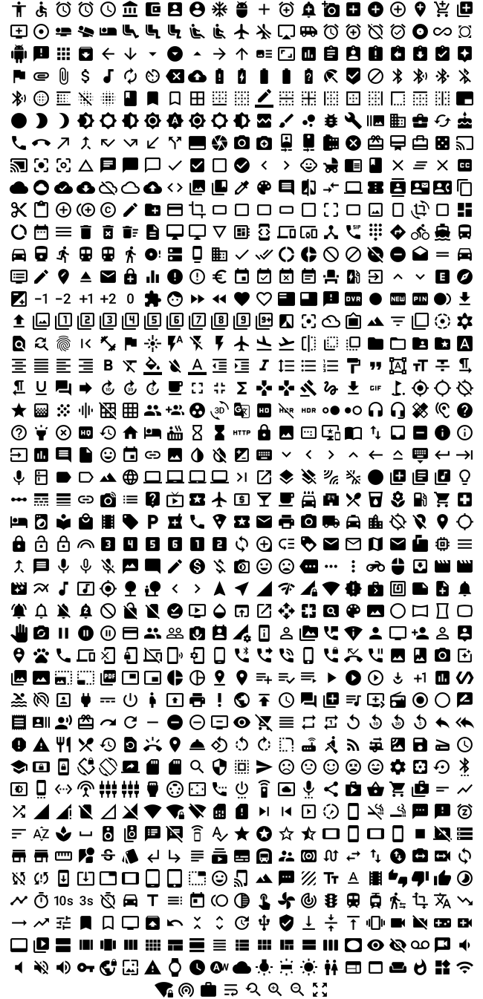

jIconFont
jIconFont is a API to provide icons generated by any IconFont. These icons can be used in Java GUI toolkits, such as Swing and JavaFX.
IconFonts are versatile and light-weight.
Any icon size
Any icon color
Choose the appropriate API for the Java GUI toolkit used by you
Choose any IconFont you wish
- Elusive
- Entypo
- Font Awesome
- Google Material Design Icons
- Open Iconic
- Typicons
- Your own IconFont
- Custom IconFonts from Fontello or Fontastic
Ready to use Icons
Elusive

Entypo
Font Awesome

Google Material Design Icons

Open Iconic

Typicons
Catalog
License
jIconFont is distributed under the terms of the MIT license.